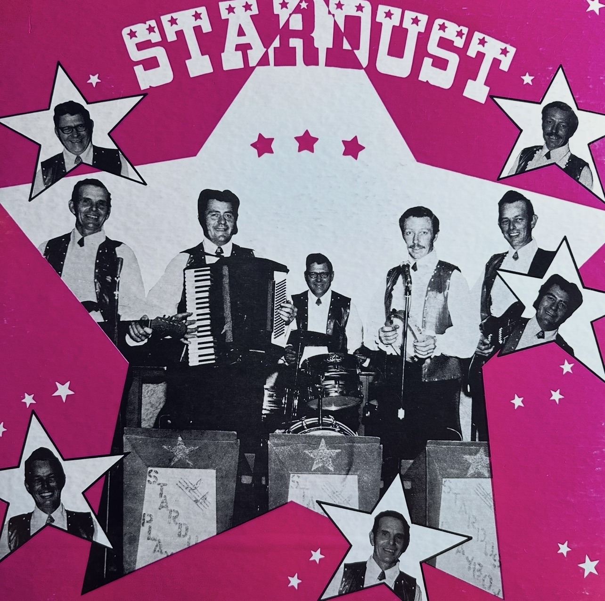
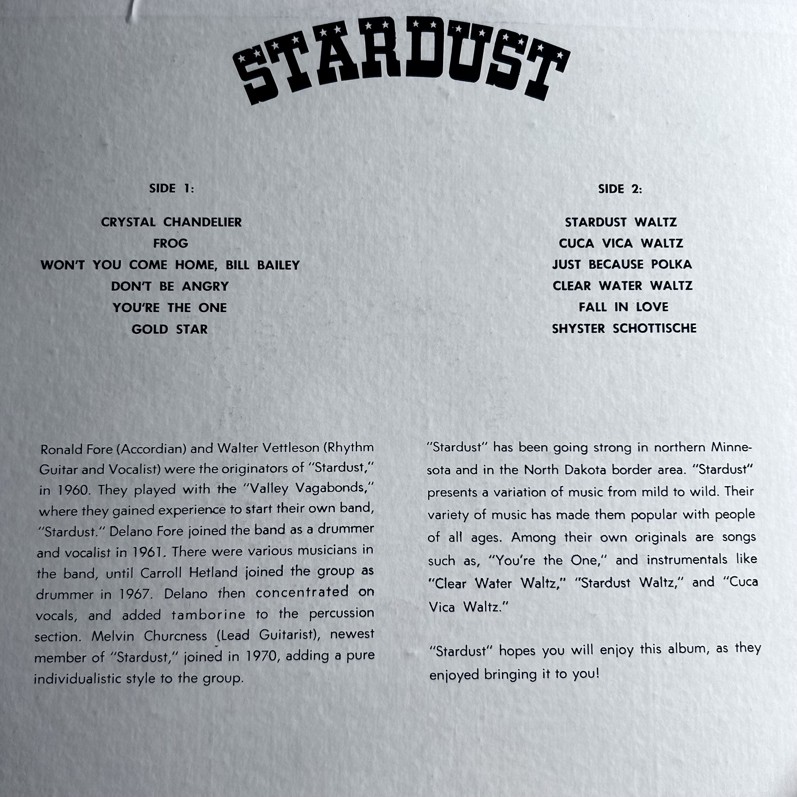

I make no claim to own this album, I make no claim of copyright owning. All I want to do is preserve this album.


In a rural area of northern Minnesota, a band of 5 peole existed. I've had to do something challenging to find info on them: speak to people. For Privacy reasons, their names will be kept private.
Song list as follows:
01 - Crystal Chandelier
02 - Frog
03 - Won't You Come Home Bill Bailey
04 - Don't Be Angry
05 - You're The One
06 - Gold Star
07 - Stardust Waltz
08 - Cuca Vica Waltz
09 - Just Because Polka
10 - Clear Water Waltz
11 - Fall In Love
12 - Shyster Schottische
Copied from the back of the record:
Ronald Fore (Accordian) and Walter Vettleson (Rhythm Guitar and Vocalist) were the originators of "Stardust," in 1960. They played with the "Valley Vagabonds," where they gained experience to start their own band, "Stardust." Delano Fore joined the band as a drummer and vocalist in 1961. There were various musicians in the band, until Carroll Hetland joined the group as drummer in 1967. Delano then concentrated on vocals, and added tamborine to the percussion section. Melvin Churcess (Lead Guitarist), newest member of "Stardust," joined in 1970, adding a pure individualistic style to the group. "Stardust" has been going strong in northern Minnesota and in the North Dakota border area. "Stardust" presents a variation of music from mild to wild. Their variety of music has made them popular with people of all ages. Among their own originals are songs such as, "You're the One," and instrumentals like "Clear Water Waltz," "Stardust Waltz," and "Cuca Vica Waltz." "Stardust" hopes you will enjoy this album, as they enjoyed bringing it to you!
Info on this record has been not well documented. The Clearwater Polk area is mainly full of elderly retired folk. To dig up info on them, I had to ask people in person. Ronald Fore was the first to die in 1981 and this link is all I could find on him. I couldn't find anything on his cause of death at the age of 49. I've heard some possibilities, but out of respect for his family, I will leave no untrue theories. Walter Vettleson was the next to pass in 2003 at the age of 80. He has surviving relatives who I have met some of. One of them I used to work for. Carroll Hetland died a few years later at the age of 75 in 2007. I only know of one of his descendants and I've never met him, just know of him. I know he put the furnace in my mom's house though. Delano Fore was the next to pass away at the age of 82 in 2016. He and Ronald were cousins. I'm pretty sure Ronald had kids, Delano though never did. Melvin Churness was the final member to pass away at the age of 85 in 2018. He has a lot of surviving family and I've met a lot of them. Other notable information on the band is that they would sometimes play with a man named Lonnie Watne. Last I heard he was still alive. I looked him up just now and if this is the same person, he's still alive at 71. Found a Facebook too, how does one kid from my old high school know him?